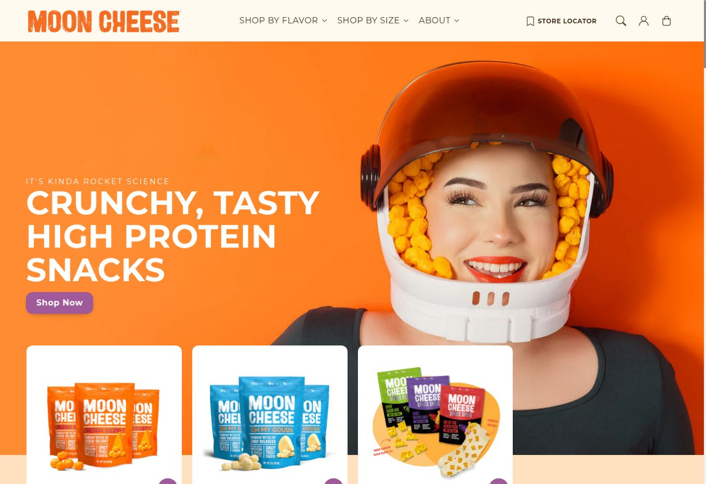
Visitar sitio ↗ 01E-commerce · Food
Moon Cheese
Tiempo estimado6–8 semanas
Una experiencia D2C de alto impacto: fotografía de producto, promociones y una identidad visual que convierte el snack en un universo propio.
Diseño digital + estrategia de marca
Diseño experiencias digitales que convierten ideas complejas en marcas claras, memorables y preparadas para crecer.
Ver trabajo↓Selección / 14 proyectos
Sistemas visuales y productos digitales pensados desde la marca hasta el último clic.

Visitar sitio ↗ 01E-commerce · Food
Tiempo estimado6–8 semanas
Una experiencia D2C de alto impacto: fotografía de producto, promociones y una identidad visual que convierte el snack en un universo propio.
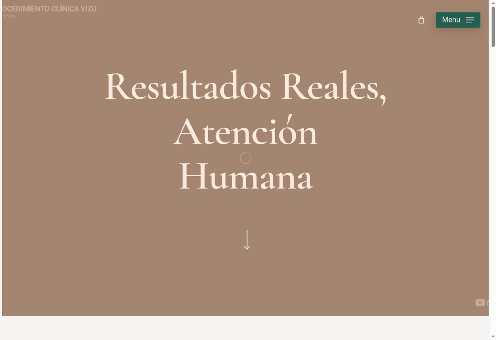
Visitar sitio ↗ 02Salud · Servicios
Tiempo estimado5–6 semanas
Sitio editorial y sofisticado para una clínica estética, con narrativa humana, video inmersivo y recorridos orientados a reserva.
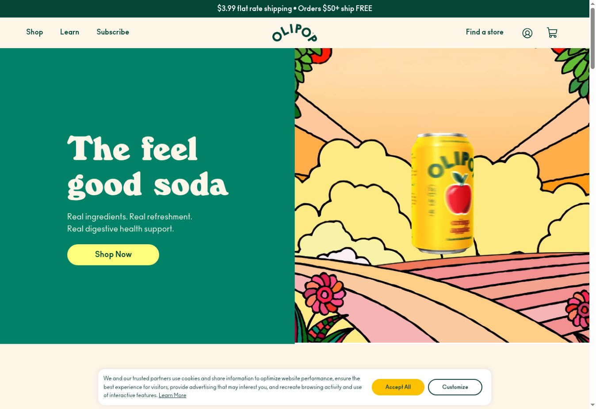
Visitar sitio ↗ 03E-commerce · Beverage
Tiempo estimado5–7 semanas
E-commerce de marca con color, ilustración y storytelling para explicar una propuesta de producto diferente sin perder claridad comercial.
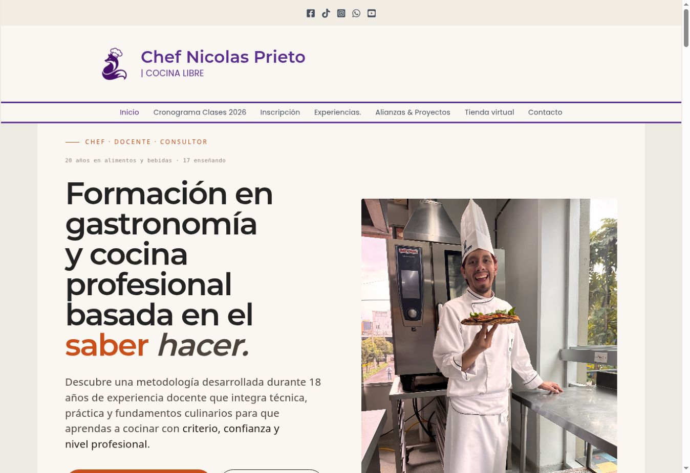
Visitar sitio ↗ 04Educación · Gastronomía
Tiempo estimado4–5 semanas
Plataforma de formación que ordena cursos, metodología, cronogramas y tienda alrededor de una marca personal sólida.
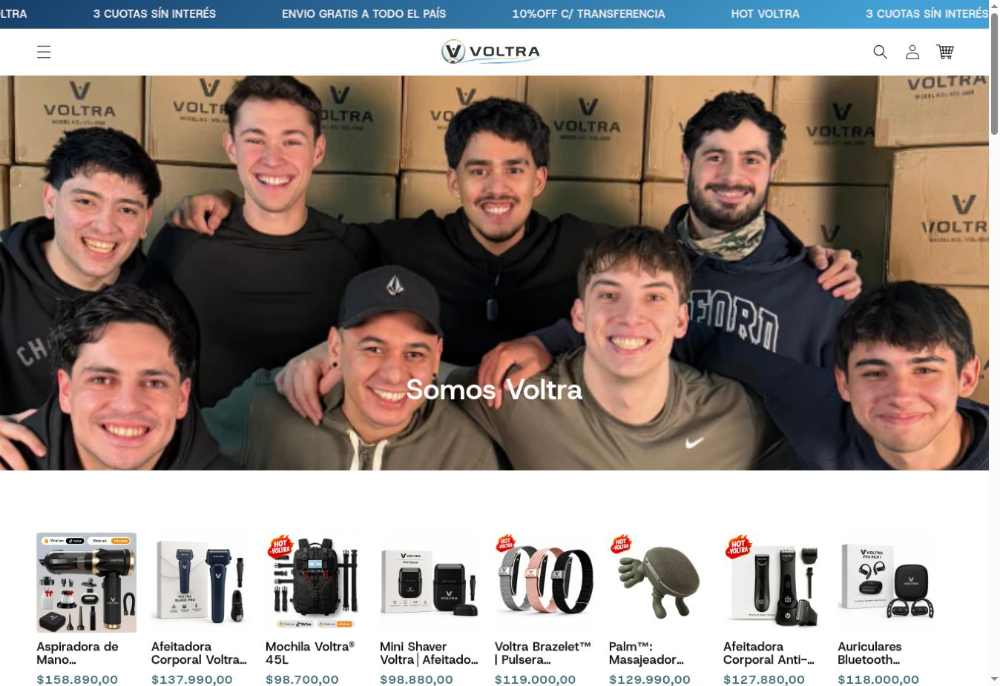
Visitar sitio ↗ 05E-commerce · Retail
Tiempo estimado4–6 semanas
Tienda de alto volumen con promociones visibles, navegación comercial y catálogo preparado para descubrir productos rápidamente.
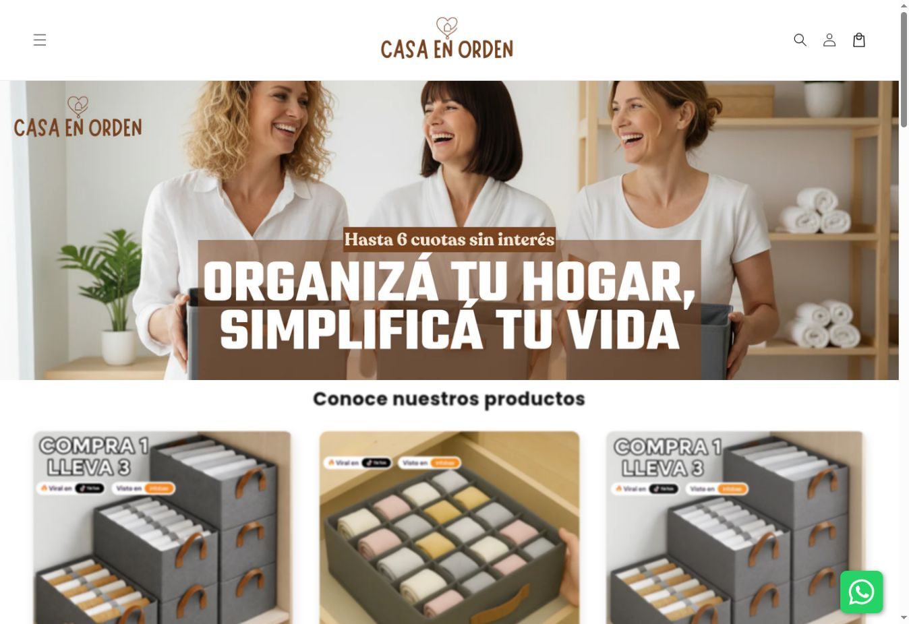
Visitar sitio ↗ 06E-commerce · Hogar
Tiempo estimado4–5 semanas
Tienda cálida y directa para soluciones de organización, con jerarquía comercial, productos protagonistas y acceso inmediato a WhatsApp.
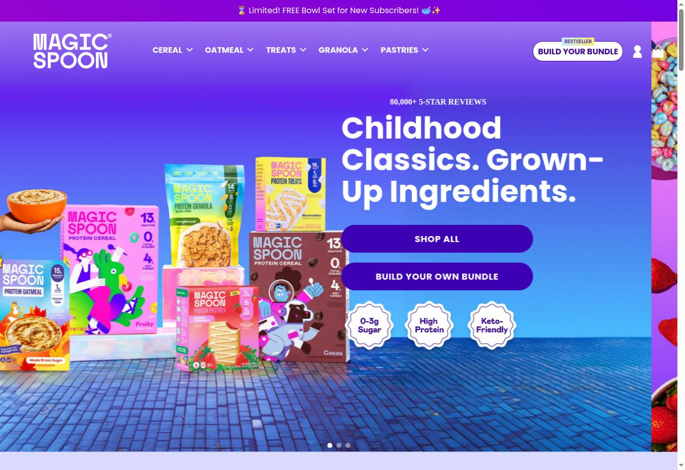
Visitar sitio ↗ 07E-commerce · Food
Tiempo estimado5–7 semanas
Sistema visual de máxima energía para un portafolio amplio de productos, bundles y suscripciones con foco en conversión.
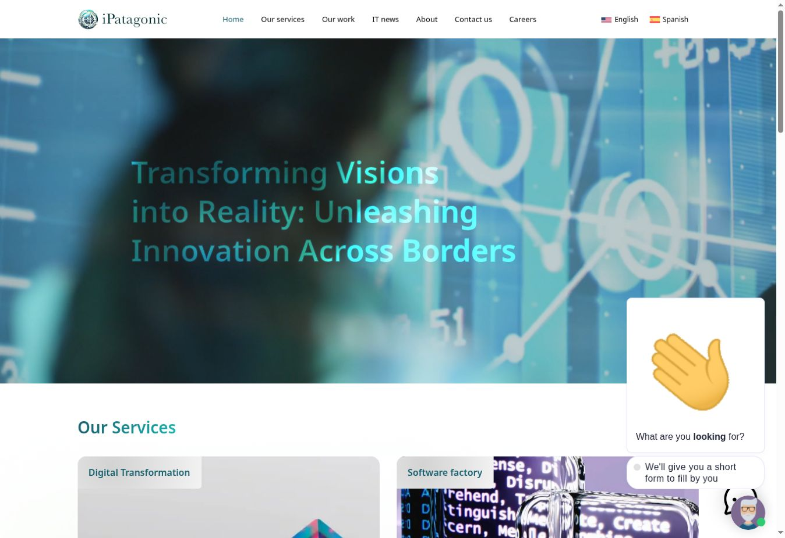
Visitar sitio ↗ 08Corporativo · Tecnología
Tiempo estimado3–4 semanas
Presencia corporativa bilingüe para consultoría tecnológica, con servicios complejos convertidos en un recorrido simple y confiable.
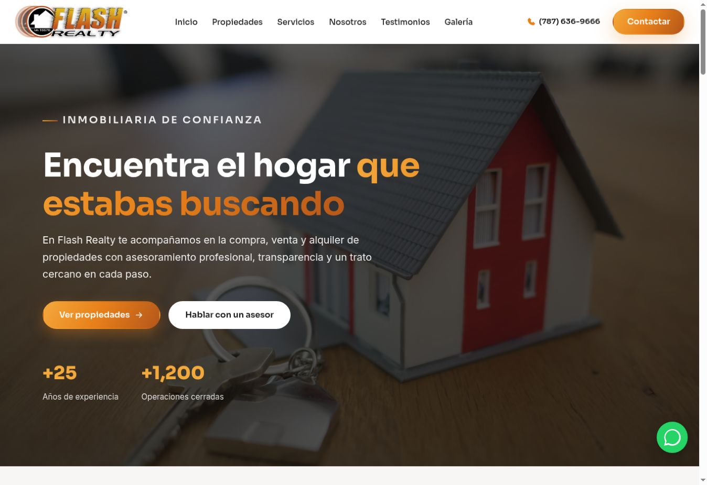
Visitar sitio ↗ 09Inmobiliaria · Leads
Tiempo estimado3–4 semanas
Landing inmobiliaria orientada a captación: propuesta clara, prueba de experiencia y llamados a la acción de baja fricción.
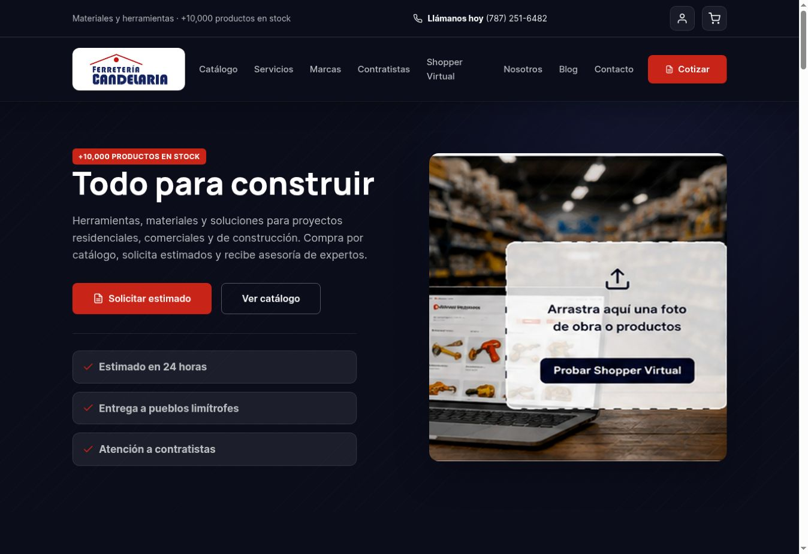
Visitar sitio ↗ 10Retail · Construcción
Tiempo estimado4–5 semanas
Portal comercial robusto con catálogo, cotización y un shopper virtual pensado para clientes y contratistas.
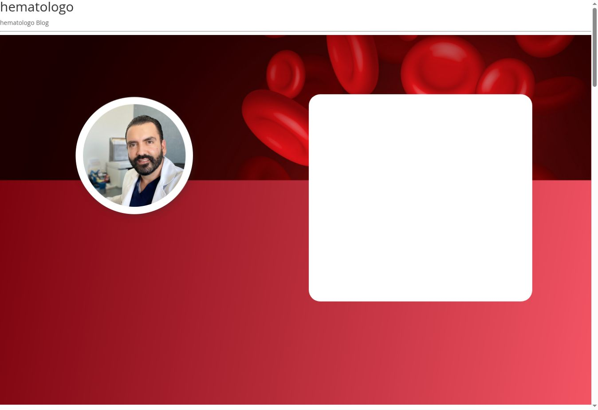
Visitar sitio ↗ 11Salud · Marca personal
Tiempo estimado3–4 semanas
Sitio médico que combina autoridad profesional, información clara y un camino directo hacia la consulta.
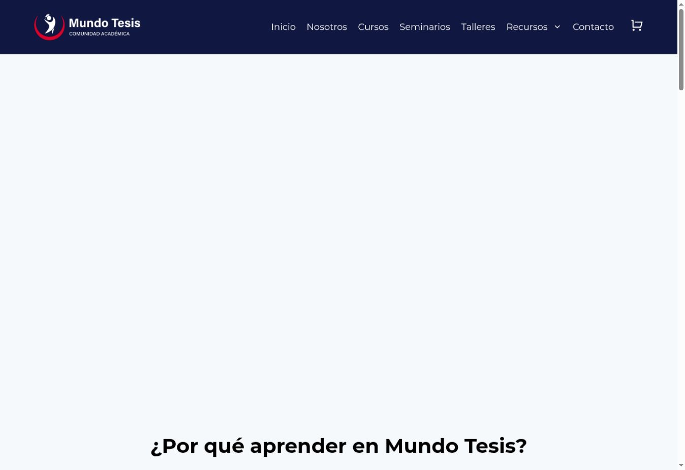
Visitar sitio ↗ 12Educación · Comunidad
Tiempo estimado3–4 semanas
Ecosistema académico para cursos, seminarios, talleres y recursos con una navegación escalable.
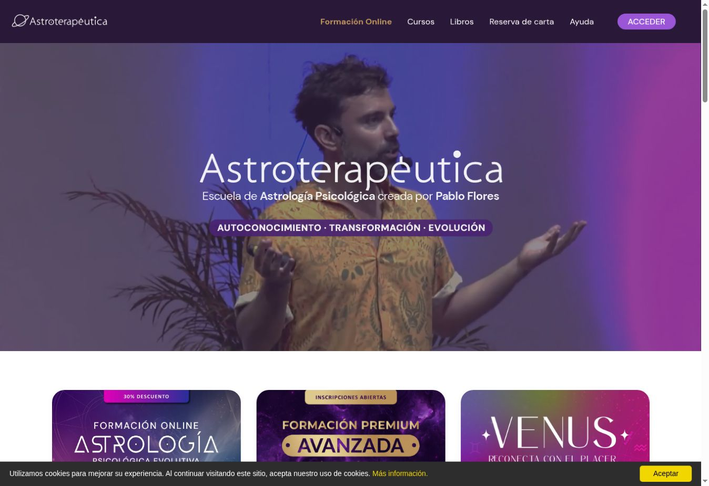
Visitar sitio ↗ 13Educación · Wellness
Tiempo estimado4–5 semanas
Escuela online con atmósfera inmersiva, oferta formativa jerarquizada y un lenguaje visual reconocible.
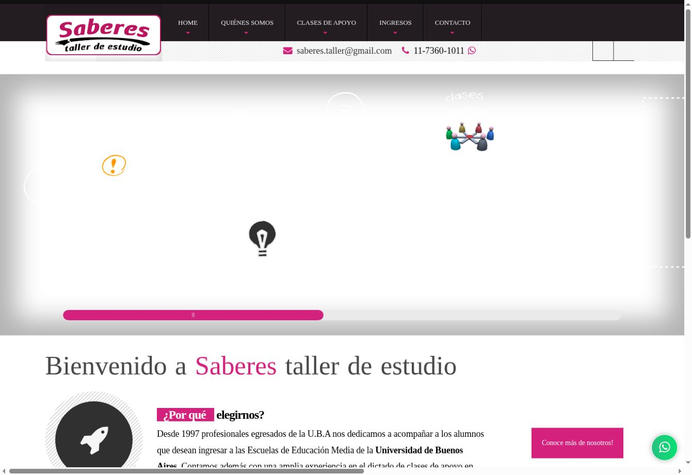
Visitar sitio ↗ 14Educación · Institucional
Tiempo estimado2–3 semanas
Web institucional para acompañamiento educativo, con información de ingresos, clases y contacto centralizada.
Perfil / Enfoque
DGSoy David Galindo, especialista en diseño y marketing. Conecto identidad, contenido y tecnología para crear experiencias que se sienten distintas y funcionan en el mundo real.
Websites, landing pages, tiendas y plataformas.
Sistemas visuales, dirección de arte y marca digital.
Arquitectura, contenido y recorridos orientados a objetivos.